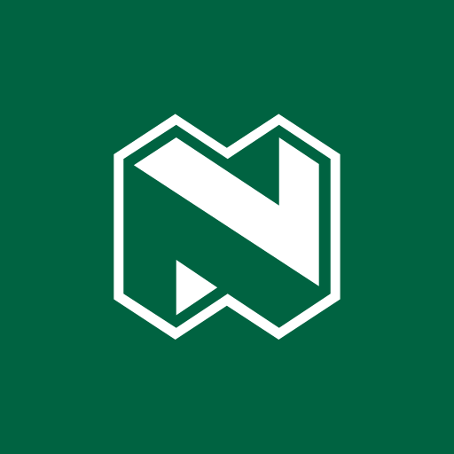
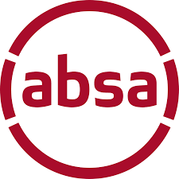

Department Of Education
Gauteng Department Of Education
Nedbank

Airlink Logo
AAL.L_BIG
apexhi-Logo
Companies can offer internships, work experience opportunities, or apprenticeships for TEACH SA participants. This can provide real-world exposure to career options for students.
Offer to volunteer your time for specific projects, initiatives, or events. Your contributions could range from helping with fundraising campaigns to participating in community service activities.
Companies can encourage their employees to volunteer their time and skills to support TEACH SA’s schools, workshops, or Legacy Projects. This involves consulting, lecturing, mentoring, or participating in community engagement activities.
Partners can collaborate with TEACH on specific projects that align with expertise from our Ambassador’s Legacy Project pool. Contribute to an afterschool class, food garden, or sports team champions in the making!